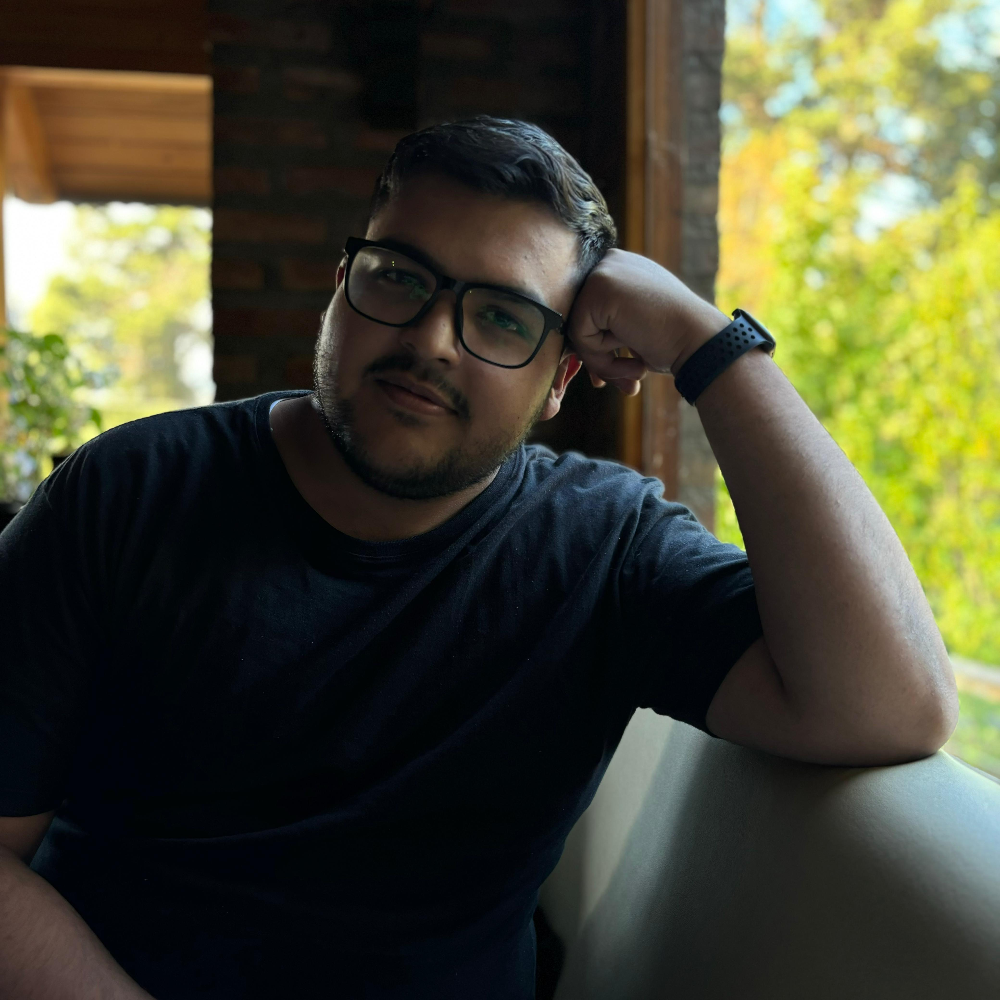

Matt | WDD
Hey everyone! I am from Argentina, Mendoza. It's a beautiful city near the mountains. I am 26 years old and have been married for almost 3 years. I'm a Talent Acquisition Specialist at a software development company where I fell in love with the tech world. I love playing guitar and singing when I have time to do so. We have a lot of guitars and other instruments at home (but I always use the same guitar lol). I just switched my business major to applied tech because I have the goal to combine both areas for my career.